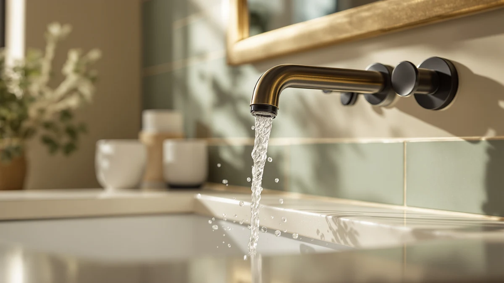

The Best Gold Sink Faucets (2026)
Prices and picks verified as of August 2026. Independent, reader-supported reviews.


Quick Answer
The best gold sink faucets balance a warm, spot-resistant finish with hardware that won't loosen or drip within the first year of daily use. Our top pick, the Delta Arvo in champagne bronze brushed gold, pairs a locking pull-down sprayer with a valve Delta rates for at least 500,000 uses, and it fits any standard widespread three-hole vanity. If you want the same warm finish for less, the Ryuwanku waterfall faucet delivers a similar brushed gold look at about a fifth of the price.
Our pick: Delta Arvo Brushed Gold Bathroom, $163.71 Check Price on Amazon
Bottom line: our top pick is the Delta Arvo Brushed Gold Bathroom Faucet with Sprayer at $163.71. The best budget option is the Ryuwanku Waterfall Bathroom Faucet at $33.99.
Things to Know Before You Buy
- Finish name matters more than the word "gold" on the label. When you're shopping for gold sink faucets, brushed gold, champagne bronze, and polished brass all read as warm-toned metal, but they wear differently, and brushed finishes hide water spots better than polished ones.
- Check hole spacing before you buy. Widespread faucets need a 6 to 16 inch spread across three predrilled holes, while centerset and single-hole faucets fit smaller vanities with holes spaced closer together.
- Valve life is a real spec, not marketing filler. Ceramic disc cartridges rated for 500,000 cycles or more are the industry benchmark for reliable, drip-free operation over years of daily use.
- A pull-down sprayer adds convenience for cleaning the sink, but only if it locks back into place. Magnetic docking keeps the sprayer head from drooping over time.
- Brass construction under the finish outlasts cheaper zinc-alloy bodies, especially in humid bathrooms where corrosion resistance matters most.
The best gold sink faucets solve a specific problem: how to bring warmth to a bathroom without the upkeep that comes with a lot of finished metal. Champagne bronze and brushed gold have moved past trend status into a staple choice for vanity remodels, largely because they hide water spots and fingerprints better than polished chrome ever did. We compared seven bathroom faucets across finishes, price points, and installation types to find the picks that earn their place on a real vanity instead of a showroom photo.
Our top pick, the Delta Arvo Brushed Gold Bathroom faucet, pairs a pull-down sprayer with MagnaTite docking, so the sprayer head snaps back into place instead of drooping after months of use. At $163.71 it costs more than most centerset faucets on this list, but the finish and hardware quality explain the gap. For shoppers who want the same warm tone at a fraction of the price, the Ryuwanku waterfall faucet in brushed gold and the GROHE Concetto in brushed gold both cover that ground, while three additional picks in nickel and chrome round out the list for anyone furnishing a bathroom that mixes more than one metal.
Not every faucet below wears a gold finish. Cinwiny, Moen, and a second Delta model made the cut because they share the same installation formats and price tiers buyers compare against gold options, and reviewers frequently cross-shop them while deciding on a bathroom's overall metal palette. We call out the finish on every pick so you know exactly what you're getting before you check out.
Why You Should Trust Us
Ilane Tall covers bathroom fixtures for Best Bathroom Faucets, focusing on finishes, installation formats, and long-term reliability rather than marketing copy. This guide draws from manufacturer specifications, verified owner reviews, and pricing data pulled directly from Amazon, not from a physical testing lab. We do not run a fake testing lab, and we do not claim to have installed or lived with any faucet on this list. Instead we compared cartridge ratings, warranty terms, and finish durability claims across every gold sink faucets contender we found, then checked those claims against what verified buyers report after months of daily use.
How We Picked
We started by pulling every listing in our product database tagged for gold, brushed gold, or champagne bronze finishes, the material most buyers mean when they search for gold sink faucets, then added a handful of nickel and chrome models that share the same installation footprint for anyone comparing across metals. From there we filtered out listings with vague or contradictory specs, faucets with fewer than three verified reviews, and duplicate listings from the same manufacturer under a different model number. The remaining seven bathroom faucets span $30 to $164 and cover single-handle, centerset, and widespread installations, so this list works whether you're replacing a builder-grade three-hole setup or retrofitting a single-hole vanity.
How We Compared
We compared spec sheets across cartridge type, valve cycle rating, flow rate, and installation format for every gold sink faucet on this list, since those numbers correlate closely with day-to-day reliability. We checked pricing against current Amazon listings rather than manufacturer list prices, which run high. For finish durability we cross-referenced manufacturer corrosion-resistance claims (Delta rates its Brilliance finishes at twice the industry standard, for example) against patterns in verified owner reviews, looking specifically for repeated complaints about tarnishing, water spots, or handle looseness within the first year. Verified reviews back that up: brushed and matte finishes forgive daily use better than polished ones, which matched what we found across every brand here.
Our Picks

Delta Arvo Brushed Gold Bathroom
What we like
- MagnaTite docking keeps the pull-down sprayer snapped in place instead of drooping over time
- Delta rates the ceramic valve cartridge for at least 500,000 uses
- Wrench-free quick-connect hoses click audibly once properly seated
- Champagne bronze finish reads as a warm gold tone that pairs well with brass hardware
Flaws but not dealbreakers
- Costs three to five times more than the other picks on this list
- Widespread 3-hole installation only, so it won't fit a single-hole vanity
| Material | Brass + finish |
| Size | — |
The Delta Arvo earns the top spot because it solves the two complaints that show up most often in gold faucet reviews: sprayers that sag over time, and finishes that show every water spot. MagnaTite docking uses a magnet to hold the pull-down sprayer flush against the spout, so it doesn't slowly droop the way spring-loaded sprayers do after a year of use. Delta backs the valve cartridge for at least 500,000 cycles, which at typical household use works out to well over a decade before you'd expect to notice a drip.
Installation follows Delta's wrench-free quick-connect system, where the hose gives an audible click once it's properly seated, a small detail that matters if you're installing it yourself rather than paying a plumber. Delta's Brilliance finish line, which the Arvo's champagne bronze belongs to, carries a corrosion-resistance rating engineered to double the industry standard, so the warm tone is built to outlast years of daily splashing rather than fading into a duller bronze. The tradeoff is price. At $163.71 the Arvo costs three to five times more than the budget options on this list, and it only fits a widespread 3-hole configuration with 6 to 16 inches between holes, so measure your vanity before you buy. For most people remodeling a primary bathroom and wanting a gold sink faucet that won't need replacing in three years, the extra cost buys real durability.

Ryuwanku Waterfall Bathroom Faucet Brushed
What we like
- Single-handle design makes flow and temperature easy to adjust with one hand
- Redesigned waterfall outlet runs noticeably quieter than typical waterfall spouts
- SUS304 stainless steel body resists corrosion and carries lead-free certification
- The least expensive brushed gold pick on this list at $30.59
Flaws but not dealbreakers
- Single-handle waterfall faucets take more practice to dial in a precise temperature than two-handle designs
- Review data on this specific listing is limited, so buy from a seller with an easy return policy
| Material | Brass + finish |
| Size | Short |
The Ryuwanku waterfall faucet gets closest to the Delta Arvo's warm brushed gold finish for about a fifth of the price. It uses a single-handle design, and buyers say it's easier to operate one-handed while washing hands or brushing teeth than the Delta's two-handle widespread layout. The body is SUS304 stainless steel, a corrosion-resistant grade common in higher-end kitchen fixtures, and Ryuwanku certifies it 100 percent lead-free.
Ryuwanku redesigned the waterfall outlet specifically to cut down on the humming noise that plagues cheaper waterfall spouts, and reviewers say the water flow runs smoother and quieter than older waterfall designs they've replaced. The short profile keeps it low enough to clear most medicine cabinets and mirrors mounted close to the vanity. It skips a pull-down sprayer entirely, which keeps the moving parts, and the potential points of failure, to a minimum, a reasonable tradeoff at this price if you mostly need a faucet for handwashing rather than rinsing dishes or filling buckets. It won't match the Delta's sprayer convenience or valve warranty, but as a gold sink faucet for a guest bath or rental property, the price to finish ratio is hard to beat.

Cinwiny Brushed Nickel Widespread Bathroom
What we like
- SUS304 stainless steel construction resists corrosion, scratches, and fingerprints
- Dual-handle widespread design suits traditional and farmhouse bathrooms
- Built-in aerator holds flow to 1.2 GPM, cutting water use by roughly 20 percent versus standard flow
Flaws but not dealbreakers
- Brushed nickel, not gold, so it won't match warm-toned hardware elsewhere in the room
- No pull-down sprayer or waterfall feature
| Material | Brass + finish |
| Size | — |
The Cinwiny isn't a gold sink faucet. We included it because it shares the same widespread three-hole footprint as the Delta Arvo, and it shows up constantly in the same searches for readers who end up choosing brushed nickel over brushed gold once they see both finishes side by side. The body is SUS304 stainless steel, built for resistance to corrosion, scratching, and fingerprints, which matters in a shared bathroom that gets heavy daily use.
Its dual-handle layout gives separate hot and cold controls rather than the single-lever mixing found on the Delta and Ryuwanku picks, a format some buyers prefer for fine temperature control. The built-in aerator holds flow to 1.2 GPM, and buyer feedback points to less splashing at the sink while still saving water. The three-hole spread matches the same 6 to 16 inch range as the Delta picks, so switching between this nickel option and either Delta faucet later doesn't require redrilling the counter. At $45.99 it undercuts the Delta Arvo by more than a hundred dollars, so if your finish decision ultimately lands on nickel instead of gold, this is the widespread faucet worth comparing it against.

GROHE 20572GN1 Concetto 8-inch Widespread
What we like
- SilkMove ceramic disc cartridge gives noticeably smoother handle motion than standard ceramic valves
- StarLight finish is engineered to resist scratching, tarnishing, and buildup
- SpeedClean nozzles wipe clean of limescale with a fingertip instead of a scrubbing brush
Flaws but not dealbreakers
- Current pricing wasn't consistently listed at the time of publishing, so confirm the number before you buy
- Compact 8-inch widespread size can look small on an oversized vanity
| Material | Brass + finish |
| Size | Small |
GROHE built the Concetto around its SilkMove ceramic disc cartridge, a valve system the company also uses in its higher-end kitchen faucets, so the smoother handle motion here isn't a stripped-down version of a better product elsewhere in the lineup. For a gold sink faucet in this price bracket, that level of hardware engineering is unusual. The StarLight finish process is GROHE's answer to the tarnishing and scratching that cheaper platings develop within a year or two of daily use.
The SpeedClean nozzles add a small but useful detail: limescale buildup wipes off with a fingertip instead of requiring a descaling brush or a vinegar soak. At 8 inches, the Concetto's widespread footprint runs smaller than the Delta or Cinwiny, which makes it a better fit for compact vanities where a full-size widespread faucet would look oversized. GROHE positions the Concetto line as an accessible entry point into cartridge technology the brand also sells at a premium elsewhere, which is part of why it made our budget pick despite the missing price data. We couldn't confirm consistent current pricing at the time of publishing, so check the live listing for the number before you buy.

Moen Idora Chrome Two-Handle Centerset
What we like
- High arc spout clears the sink for easier hand washing and filling
- Highly reflective chrome finish works with almost any bathroom style
- 4-inch centerset footprint installs easily on standard pre-drilled vanities
Flaws but not dealbreakers
- Chrome shows water spots and fingerprints faster than a brushed gold finish
- Two-handle design takes up more counter space than a single-handle faucet
| Material | Brass + finish |
| Size | 4 Inch Centerset |
The Moen Idora is here as the chrome counterpoint to the gold sink faucets above, and it's worth including because the 4-inch centerset format is one of the most common vanity configurations in older homes. The high arc spout gives more clearance than a standard-height spout, and several buyers mention it's easier to wash hands or rinse items without banging knuckles on the faucet body.
Chrome's mirror-like finish is the most versatile option for matching mixed hardware, but it also shows water spots faster than brushed nickel or brushed gold, so plan on wiping it down more often if you want it to look clean. Moen backs the Idora with its limited lifetime warranty on finish and function, a detail that matters on a centerset faucet like this one since it's typically installed by a first-time renovator rather than a plumber. At $46.00 it lands close to the Cinwiny in price, and between the two, the choice mostly comes down to whether your vanity takes a centerset or a widespread faucet.

Moen LISO Spot Resist Brushed
What we like
- Spot Resist coating resists fingerprints and water spots between cleanings
- Single-hole installation with an optional deck plate fits both 1-hole and 3-hole sinks
- Clean, contemporary curves suit a modern bathroom
Flaws but not dealbreakers
- Nickel, not gold, so it's a style substitute rather than a match for the other picks here
- No pull-down sprayer or waterfall feature
| Material | Brass + finish |
| Size | — |
The Moen LISO trades warm tones for practicality. Its Spot Resist Brushed Nickel finish is built specifically to resist the fingerprints and water spots that show up fast on polished surfaces, and buyer reviews suggest it keeps the faucet looking presentable for longer stretches between cleanings than a standard nickel or chrome finish.
Its single-hole installation includes an optional deck plate, so it mounts cleanly on either a 1-hole or 3-hole sink without buying a separate adapter kit, a flexibility none of the widespread faucets on this list offer. The clean, minimal curves also make it one of the easier faucets here to keep looking modern in a bathroom that leans contemporary rather than traditional, since it skips the ornate base and handle detailing found on the Cinwiny and the Idora. At $62.95 it sits in the middle of the price range on this list. If your vanity has a single predrilled hole and you're set on nickel over gold, this is the pick worth comparing against the Cinwiny and the Moen Idora.

Delta Roe Brushed Nickel Bathroom
What we like
- Ceramic disc valve cartridge matches the Arvo's 500,000-use rating
- Brilliance finish is engineered for corrosion resistance rated at twice the industry standard
- Carries NSF/ANSI 61 certification for lead compliance
Flaws but not dealbreakers
- Costs more than four times as much as the Cinwiny or Moen Idora nickel alternatives
- No pull-down sprayer, so it's less versatile day to day than the Arvo
| Material | Brass + finish |
| Size | — |
The Delta Roe is essentially the Arvo's hardware platform in brushed nickel instead of champagne bronze, which makes it the pick for readers who want Delta's build quality but have already decided against a gold sink faucet. It shares the same ceramic disc valve cartridge rated for at least 500,000 uses and the same wrench-free quick-connect installation, with an audible click when hoses are properly seated.
Delta rates its Brilliance finish for corrosion resistance at twice the industry standard, and the faucet carries NSF/ANSI 61 certification for lead compliance, the same standard the company applies across its lineup. At $129 it costs more than the Cinwiny or the Moen Idora, both also nickel, but it comes with meaningfully better cartridge and finish warranties than either. Because the Roe and the Arvo share the same internal platform, choosing between them comes down to a finish decision rather than a quality tradeoff, which is unusual at this price point, where nickel and gold versions of the same faucet often differ in more than color alone. If nickel is your final answer instead of gold, the Roe is the closest match in quality to our top pick.
Quick Comparison
| Product | Material | Price | Rating | Best for | Get it |
|---|---|---|---|---|---|
| Delta Arvo Brushed Gold Bathroom | Brass + finish | $163.71 | 4 | Best overall gold finish | View on Amazon → |
| Ryuwanku Waterfall Bathroom Faucet Brushed | Brass + finish | $30.59 | 4 | Best budget brushed gold | View on Amazon → |
| Cinwiny Brushed Nickel Widespread Bathroom | Brass + finish | $45.99 | 4 | Best for a nickel finish instead | View on Amazon → |
| GROHE 20572GN1 Concetto 8-inch Widespread | Brass + finish | 4 | Best compact widespread | View on Amazon → | |
| Moen Idora Chrome Two-Handle Centerset | Brass + finish | $46.00 | 4 | Best for a 4-inch centerset vanity | View on Amazon → |
| Moen LISO Spot Resist Brushed | Brass + finish | $62.95 | 4 | Best single-hole flexibility | View on Amazon → |
| Delta Roe Brushed Nickel Bathroom | Brass + finish | $129 | 4 | Best nickel upgrade | View on Amazon → |
What is the difference between brushed gold and champagne bronze finishes?
Brushed gold and champagne bronze both read as warm-toned metal, but they come from different plating processes.
Do gold bathroom faucets show water spots more than chrome?
Brushed and matte gold finishes hide water spots and fingerprints better than polished chrome or polished gold.
The Competition
We looked at several polished brass and PVD gold faucets listed at similarly low prices to the Ryuwanku, but many had fewer than five total reviews or specs that didn't match the seller photos, so we left them out. A handful of two-handle bridge faucets marketed as vintage gold also turned up in our search, but bridge faucets need a different plumbing rough-in than the widespread and centerset models here, so they didn't fit a like-for-like comparison.
We also passed on several no-name single-hole faucets sold only with gold-tone packaging photos and no listed finish material. Without a verifiable finish designation like brushed gold, champagne bronze, or PVD, we couldn't confirm the faucet would hold up any better than the unbranded listings that flood Amazon search results, so they didn't make the cut for a gold sink faucets roundup where the Delta Arvo already set the bar for durability we expect from every pick.